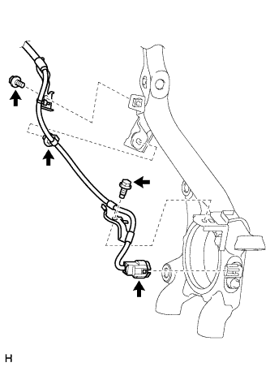
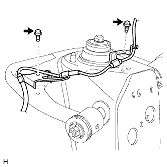
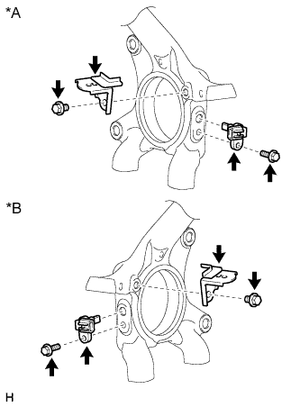

FRONT SPEED SENSOR > REMOVAL |
| 1. REMOVE FRONT WHEEL |
| 2. REMOVE FRONT SKID CONTROL SENSOR WIRE |
|  |
Disconnect the connector from the front speed sensor.
Remove the 2 bolts and 2 harness clamps.
Detach the clip.
|  |
Remove the 2 bolts and 2 harness clamps.
Disconnect the connector as follows.
| *A | for LH | *B | for RH |
for LH:
for RH:
| 3. REMOVE SKID CONTROL SENSOR CLAMP |
|  |
Remove the bolt and skid control sensor clamp from the knuckle.
| *A | for LH |
| *B | for RH |
| 4. REMOVE FRONT SPEED SENSOR |
Remove the bolt and speed sensor from the knuckle.